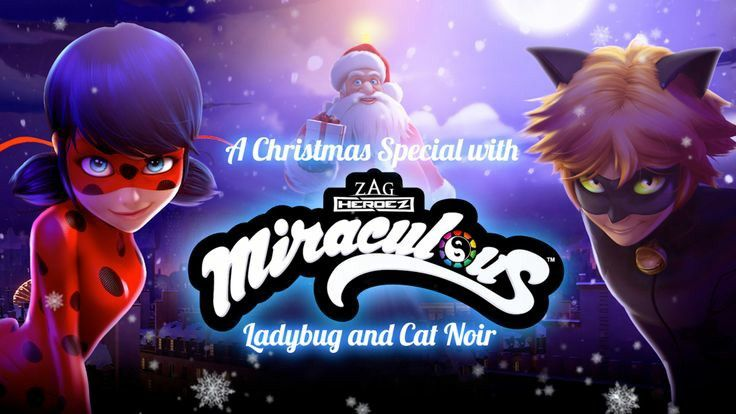
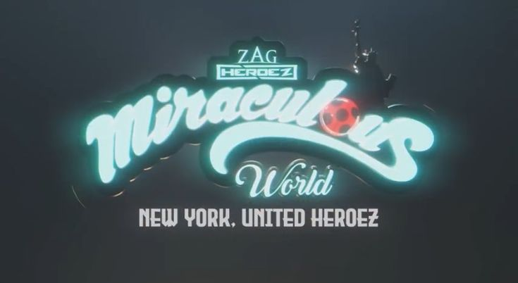
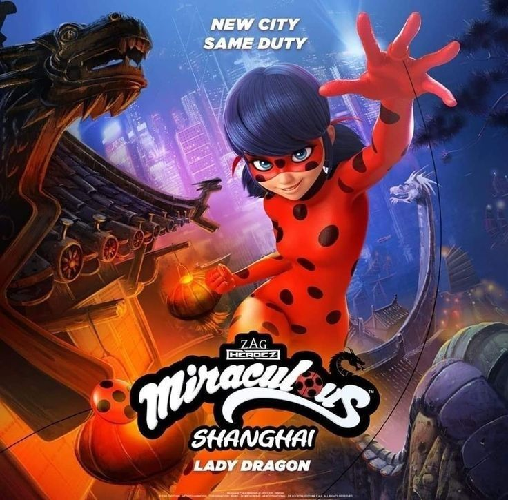
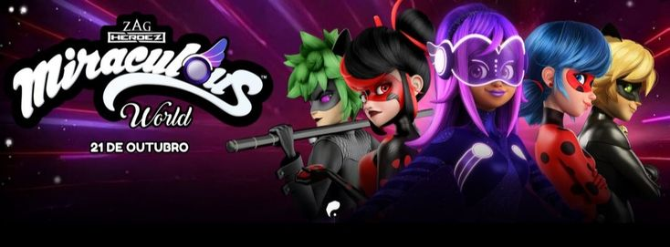
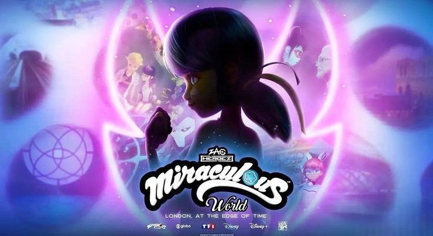
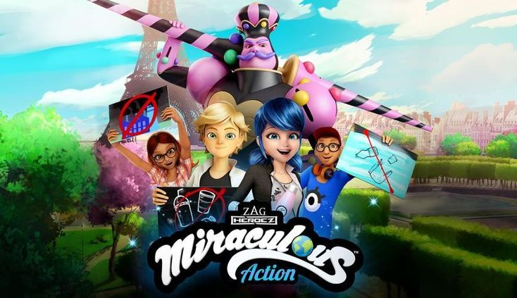

Los especiales de Miraculous
Son episodios largos fuera de la estructura normal de la serie. Muchos expanden el universo, presentan nuevos héroes, nuevas ciudades y hasta universos alternos. Algunos son completamente canon y afectan directamente la historia principal.
| Especial | Año | Lugar |
|---|---|---|
| Christmas Special | 2016 | París |
| New York: United Heroez | 2020 | New York |
| Shanghai: The Legend of Ladydragon | 2021 | Shanghái |
| Miraculous World: Paris – Tales of Shadybug & Claw Noir | 2023 | París alterno |
| London: At the Edge of Time | 2024 | Londres |
| Action Special | 2023 | París |
Christmas Special
Nuevos héroes
| Dato | Información |
|---|---|
| Estreno | 2016 |
| Tema | Navidad |
| Tipo | Musical |
| Villano | Santa Claws |
Historia
Adrien se siente triste porque su padre parece ignorar la Navidad. Mientras tanto, un malentendido provoca que Santa Claus sea akumatizado.
Características
| Elemento | Información |
|---|---|
| Canciones | Sí |
| Musical | Sí |
| Tono | Más ligero y emocional |
| Canon | Parcialmente discutido |
Curiosidades
- Es el único especial completamente musical.
- Tiene canciones originales.
- Muchos fans lo consideran fuera del tono habitual de la serie.

New York: United Heroez
Información general
| Dato | Información |
|---|---|
| Estreno | 25 de septiembre de 2020 |
| Duración | Aproximadamente 52 minutos |
| Lugar | Nueva York |
| Cronología | Entre temporadas 3 y 4 |
| Héroes invitados | United Heroez |
Historia
Marinette y toda su clase viajan a Nueva York para celebrar la Semana de la Amistad Franco-Estadounidense. Adrien también asiste debido a un evento relacionado con la marca Agreste.
Durante el viaje:
- Ladybug pierde accidentalmente los Miraculous.
- Cat Noir renuncia temporalmente a sus poderes.
- Aparecen héroes estadounidenses.
- Hawk Moth intenta aprovechar el caos.
Nuevos héroes
| Héroe | Descripción |
|---|---|
| Eagle | Heroína principal estadounidense |
| Majestia | Heroína similar a Superman |
| Knightowl | Heroína tecnológica |
| Sparrow | Compañera de Eagle |
| Uncanny Valley | Androide heroica |
Datos importantes
- Se revela que existen héroes fuera de Francia.
- Introduce el concepto de organizaciones heroicas internacionales.
- Adrien y Marinette tienen más desarrollo romántico.
- Se menciona una “Orden de Guardianes” más amplia.
Curiosidades
| Curiosidad | Información |
|---|---|
| Inspiración | Superhéroes clásicos estadounidenses |
| Eagle | Inspirada en símbolos de libertad |
| Uncanny Valley | Hace referencia al fenómeno psicológico real |
| Estilo | Tiene mucha influencia de películas de Marvel |

Shanghai: The Legend of Ladydragon
Información general
| Dato | Información |
|---|---|
| Estreno | 4 de abril de 2021 |
| Lugar | Shanghái |
| Cronología | Entre temporadas 2 y 3 |
| Nueva heroína | Fei / Ladydragon |
| Villano principal | Hawk Moth y Cash |
Historia
Marinette viaja a Shanghái para visitar a su tío Wang Cheng y celebrar su cumpleaños. Sin embargo:
- Pierde todas sus pertenencias.
- Conoce a Fei.
- Descubre una antigua joya mágica china.
- Termina enfrentando amenazas relacionadas con el poder de los prodigios.
Fei Wu / Ladydragon
| Dato | Información |
|---|---|
| Nombre | Fei Wu |
| Alias | Ladydragon |
| Poder | Transformarse en distintos elementos |
| Arma | Espada/Joya Prodigious |
| Concepto | Mitología china |
Los Prodigious
A diferencia de los Miraculous:
- Son artefactos mágicos chinos.
- Usan renlings en vez de kwamis.
- Tienen habilidades elementales y animales.
Formas de Ladydragon
| Forma | Elemento |
|---|---|
| Dragón azul | Agua |
| Dragón rojo | Fuego |
| Dragón verde | Viento |
| Dragón dorado | Poder supremo |
Datos importantes
- Amplía el lore mágico fuera de los Miraculous.
- Introduce magia china antigua.
- Explica que existen otros sistemas mágicos en el mundo.
- Marinette actúa sola gran parte del especial.

Miraculous World: Paris – Tales of Shadybug & Claw Noir
Información general
| Dato | Información |
|---|---|
| Estreno | 21 de octubre de 2023 |
| Lugar | Universo alterno de París |
| Tema | Multiverso |
| Villanos principales | Shadybug y Claw Noir |
| Héroe alternativo | Betterfly |
Historia
Ladybug y Cat Noir terminan en un universo alternativo donde:
- Ellos son villanos.
- Gabriel Agreste es un héroe.
- París está controlada por el miedo.
- El equilibrio del universo está roto.
Versiones alternas
| Universo normal | Universo alterno |
|---|---|
| Ladybug | Shadybug |
| Cat Noir | Claw Noir |
| Hawk Moth | Betterfly |
| Alya | Scarabella alternativa |
Shadybug
| Característica | Información |
|---|---|
| Identidad | Marinette alterna |
| Personalidad | Fría y agresiva |
| Diseño | Negro y rojo oscuro |
| Objetivo | Obtener más poder |
Claw Noir
| Característica | Información |
|---|---|
| Identidad | Adrien alterno |
| Personalidad | Rebelde y destructivo |
| Poder | Cataclysm más agresivo |
Betterfly
Versión heroica de Gabriel Agreste
| Dato | Información |
|---|---|
| Diseño | Blanco y morado |
| Poder | Usa mariposas positivas |
| Objetivo | Salvar universos |
Importancia
Este especial:
- Introduce oficialmente el multiverso.
- Muestra versiones alternativas.
- Profundiza en la psicología de Marinette y Adrien.
- Explora qué habría pasado si tomaran malas decisiones.
Temas
- Destino
- Elecciones personales
- Moralidad
- Corrupción emocional
- Redención

London: At the Edge of Time
Información general
| Dato | Información |
|---|---|
| Estreno | 2024 |
| Lugar | Londres |
| Tema principal | Tiempo |
| Personajes clave | Bunnyx y Chronobug |
| Relación con la serie | Continuación de temporada 5 |
Historia
La estabilidad temporal comienza a romperse y Bunnyx necesita ayuda para proteger la línea del tiempo.
Ladybug termina involucrada en:
- Paradojas
- Alteraciones temporales
- Amenazas multidimensionales
- Peligros relacionados con el conocimiento del futuro
Elementos importantes
| Elemento | Explicación |
|---|---|
| Bunnyx | Heroína del tiempo |
| Burrow | Portal temporal |
| Chronobug | Nueva transformación |
| Líneas temporales | Realidades cambiantes |
Importancia
Este especial:
- Conecta directamente con el final de la temporada 5.
- Desarrolla el concepto de viajes temporales.
- Deja pistas para futuras temporadas.

Action Special
Información general
| Dato | Información |
|---|---|
| Estreno | 2023 |
| Tema | Medio ambiente |
| Objetivo | Educación ecológica |
Historia
Marinette y Adrien enfrentan problemas relacionados con:
- Contaminación
- Reciclaje
- Desperdicio
- Daño ambiental
Historia
Fue creado para:
- Crear conciencia ecológica
- Enseñar reciclaje
- Promover cuidado ambiental
